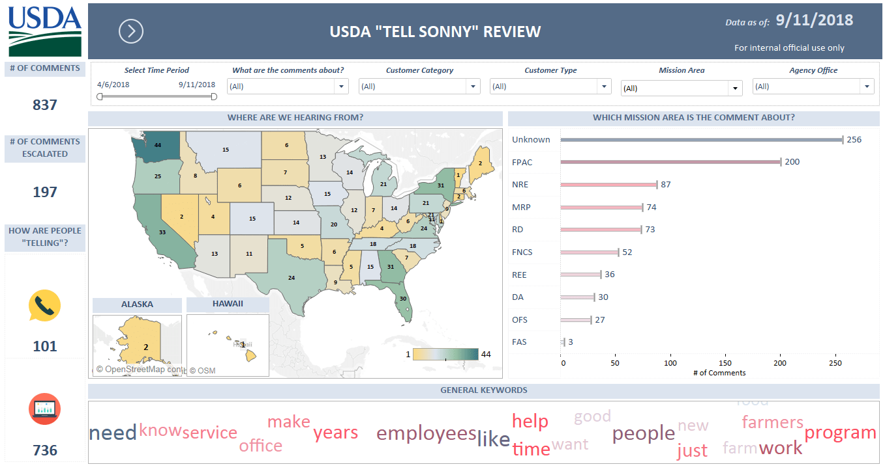

Provides a clearing house for best practices around data and analytics, instruments metrics to support service delivery processes, and builds tools that facilitate continuous process improvement.
The modernization and transformation efforts of all of the CoEs are focused on delivering meaningful impact for taxpayers.
Service Offerings
- Data analysis and reporting
- Interactive dashboard creation
- Continuous process improvement
- Metric definition and measurement
- Data driven process implementation
- Embedding mechanisms for rapid feedback and analysis
Accomplishments
- Met with all the USDA mission areas including NRE, MRP, REE, RD to understand their business and data challenges and developed letters of engagement that details how the Data Analytics COE can assist them and showcasing a path forward. The letters of engagement were supplemented with prototype visualizations depicting sample data from publicly available data sources. (April-July 2018)
- As part of the current state assessment of USDA, an inventory of agency programs and program websites, social media sites, mission area strategic plans were created. This inventory was used to understand the organizational framework and assist with letters of engagement detailing where/how data analytics can help solve issues. (May-June 2018)
- REE - Established Key Performance Indicators (KPIs) for REE mission area that align with the USDA strategic plan by conducting several workshops with the REE team. As a part of this effort, REE agency level performance indicators were assessed and evaluated to see where improvements can be made. The improved metrics have been approved by the Deputy Secretary and will be implemented in Phase II. Additionally, Rural Development mission area is interested in developing strategic plan KPIs for RD based on the same process in Phase II. (July -August 2018)
- FPAC - Analyzed crop acreage/loan participation data to identify sites for customer experience researchers to visit and created visualizations to support the report. The sites were identified based on factors such as acreage volume, loan data, crop diversity and program participation. (April 2018)
- FS - Developed working prototypes for Forest Service describing Timber Sale information over time. In addition to tracking timber sales information, these dashboards can be used to forecast expected progress as well as the impact of process/technology improvements on timber sales.(August- September 2018)
- Analyzed customer feedback from citizens across the U.S. gathered through the “Tell Sonny” initiative and created user friendly visualizations to inform USDA. The visualizations are updated daily and are triaged to respective USDA agencies for further action. (April 2018)
- Mapped USDA contact centers with over 10 FTEs to identify sites contact center researchers to visit.(April 2018)
- Evaluated USDA mission area strategic KPIs to assess alignment with USDA strategic plan. Currently working on expanding it to include additional agency level KPIs. (May-August 2018)
- Created a prototype OMB A-11 feedback mechanism and worked with mission areas including FPAC to socialize requirements and support implementation. (July-August 2018)
- Assessed and evaluated needs around various Voice of Customer (VoC) channels including Tell Sonny, Social Media and Web Analytics to evaluate where USDA can develop data driven solutions to understand customer sentiment. As a part of this effort, various working visualization prototypes were developed to reflect customer feedback that can be expanded to reflect a holistic view of USDA Voice of Customer in Phase II. (July-September 2018)
- Created a USDA specific keyword lexicon for data classification and contextual sentiment analysis. This will be an ongoing effort in Phase II and will be used to automatically classify VoC feedback and reduce agency response time. (August- September 2018)
- Developed a Data Analytics playbook to provide Government Agencies with a high-level view on how they can implement Data Analytics in their organization regardless of what analytics maturity level they are in. (August 2018)
- Developed a guide describing how to tell a story using data. This document can be used to think through the requirements of a data visualization that best describes the organization’s/project’s story. (September 2018)
Latest Updates
August 20, 2018
The Data Analytics Center of Excellence, in collaboration with performance management staff from the Research, Education, and Economics (REE) Mission Area, engaged in Key Performance Indicator (KPI) development sessions with the goal of developing initial enterprise KPIs that better convey the combined contribution of REE agencies towards USDA goals.
Working with GSA Fed2Fed Solutions, the Data Analytics Center of Excellence hosted several workshops dedicated to identifying key REE stakeholders, determining essential mission area outcomes, mapping metrics to track these outcomes, and refining priority metrics. As a result, eight KPIs were selected that will better effectively demonstrate mission area progress toward both REE and USDA goals. The Data Analytics Center of Excellence is continuing its support on this endeavor to finalize metrics and initiate reporting in FY2019.
(Continue to read Full Article)
May 21, 2018 (updated as of September 11, 2018)

Tell Sonny National Dashboard (updated as of September 11, 2018)
When Secretary of Agriculture Sonny Perdue started his “Back to Our Roots” Tour in May 2018, he wanted to give USDA employees and members of the public a way to share their thoughts and questions directly with his Department. Members of the USDA’s newly established Office of Customer Experience, the USDA Office of the Chief Information Officer, and GSA’s Centers of Excellence put their heads together- the result was “Tell Sonny”, a web-based platform and phone contact line for individuals to submit comments or inquiries about the issues that matter most to them, across all USDA agencies and programs.
In a few short months, the Tell Sonny feedback channel has received over 800 responses, ranging from questions about completing USDA paperwork to feedback on USDA policies. Many of the respondents have since been contacted directly by USDA agency staff to help resolve issues or answer questions. Tell Sonny has developed into an important listening channel for the Department, providing insights on the types of issues most important to America’s farmers and ranchers, among others.
(Continue to read Full Article)